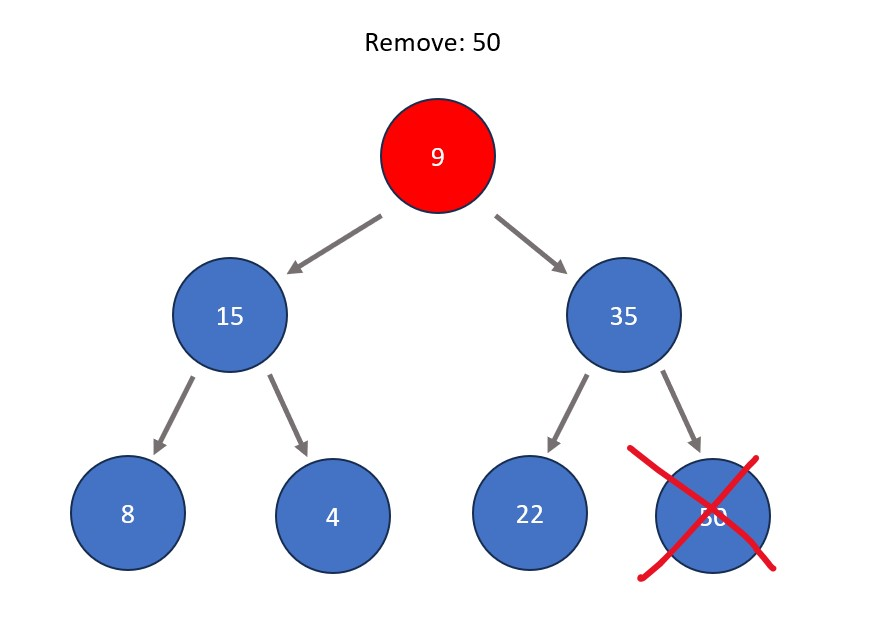

Basic Max Heap Operations:
Note: Min heaps have the same exact procedures as below but checking for nodes being less than those below them rather than greater.
- Inserting a node. This is done by first entering the node directly to the right of the right-most node on the bottom level (if the bottom level is full, insert it as the left child node of the left-most node of the bottom level). The node is then shifted directly upwards as many times as needed so that max heap properties are satisfied, meaning that all nodes are greater than all those stemming from below them. This means that if big enough, a value could be swapped all the way up to become the root node.
- Removing a node. In a heap structure, this is typically done to the root node in order to remove the absolute extreme of the tree data set. The process involves swapping the node to be removed with the right-most node at the bottom level of the tree. After this swap, the node to be removed (now in a leaf node position) is removed. The node that was swapped is shifted directly downwards as many times as needed so that max heap properties are satisfied, meaning that all nodes are greater than all those stemming from below them.



Fun Fact: Repeated deletion of the root node in a heap is the basis a sorting algorithm called heap sort. The idea is that the most extreme element always rises to the top, therefore each time an element is removed from the heap it becomes sorted in comparison to the rest of the removed elements.
Commonly Used In:
- System memory management.
- Statistical operations.
- Implementing other data structures like priority queues and binary search trees.
Other Similar Data Structures:
- Treap: A binary tree that contains two values per node: a key that reflects BST
- Splay Tree: A type of self-adjusting BST where recently accessed nodes are moved upwards to reduce search times.
- Skip List: A sorted, multi-layered linked list used for efficient search, insertion, and deletion of elements. It works by allowing "skips" to speed up searching for elements by jumping over certain irrelevant nodes that waste steps.
- Priority Queue: A queue that assigns an intentional priority value to each item upon insertion. When a dequeue occurs, the item with the lowest priority value is deleted rather than the front. If two items are tied for lowest priority value, the one closest to the front is deleted. Heaps are often used to implement priority queues.